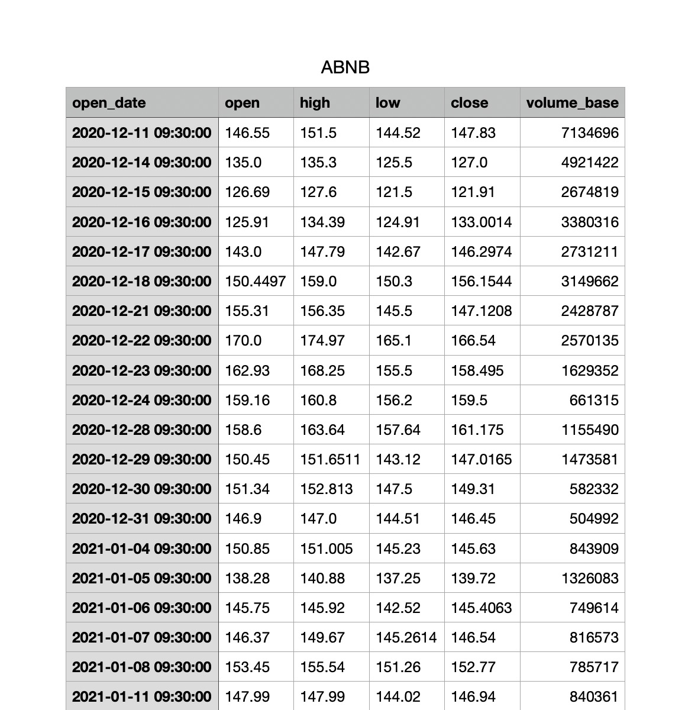
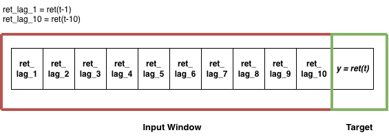
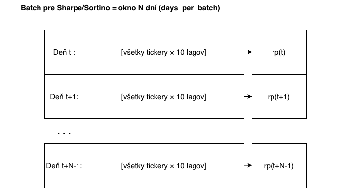

Využitie rizikovo vážených ukazovateľov v procese učenia modelov pre algoritmické obchodovanie
Bakalárska práca
Priebežná prezentácia
- Fakulta : STU FEI
Školiteľ: prof. Dr. rer. nat. Martin Drozda
Vladyslav ShudiehovTRADING AI · BAKALÁRSKA PRÁCA
Motivácia: prečo Sharpe/Sortino ako loss
- Väčšina modelov sa učí minimalizovať štatistickú chybu (MSE, MAE) – to však ešte neznamená ziskovú stratégiu.
- V tradingu je cieľom risk-adjusted výkon: vyšší výnos pri kontrolovanom riziku (a stabilita v rôznych režimoch trhu).
-
Preto je hlavná myšlienka práce:
učiť model priamo optimalizáciou Sharpe/Sortino
(t. j. loss = −Sharpe / −Sortino), a porovnať to s MSE/MAE.
\( \textbf{Sharpe} = \dfrac{\mathbb{E}[r]}{\sigma(r)}\sqrt{252} \)\( \textbf{Sortino} = \dfrac{\mathbb{E}[r]}{\sigma_-(r)}\sqrt{252}, \quad \sigma_-(r)=\text{std}(r \mid r<0) \)
Poznámka: hodnotím výkon cez portfóliový backtest (gross aj net), aby bolo vidieť reálny prínos po nákladoch.
Ciele a definícia „lepšieho“ modelu
Ciele práce
- Cieľ: navrhnúť a otestovať tréning modelov pre algoritmické obchodovanie s využitím rizikovo vážených ukazovateľov (Sharpe/Sortino).
- Porovnávam prístupy: baseline tréning (MSE/MAE) vs. tréning priamo na cieľovej metrike (−Sharpe / −Sortino loss).
- Dôležité: hodnotím NET výkon (po transakčných nákladoch), nie iba predikčnú chybu.
Definícia „lepšieho“ modelu
- Hlavné kritérium: robust Val NET Sortino (stabilný výber hyperparametrov).
- Doplnkové metriky (report): NET Sharpe, Alpha IR (NET), NET CumReturn, Avg turnover.
Čo je implementované
Modely
- MLP: baseline (MSE/MAE) + Sharpe/Sortino-loss ✅
- LSTM: baseline (MSE/MAE) + Sharpe/Sortino-loss ✅
- StockMixer: baseline ✅, Sharpe/Sortino-loss ⏳
Sharpe/Sortino-loss je implementovaný tak, aby optimalizoval portfóliové metriky (risk-adjusted výkon).
Metodika: pipeline (dáta → model → portfólio → metriky)
| 1) Dáta | 2) Model + tréning | 3) Portfólio | 4) Metriky |
|---|---|---|---|
|
denné výnosy 10 lagov (X) split train/val/test dates + tickers |
MLP / LSTM / StockMixer baseline: MSE/MAE Sharpe/Sortino loss |
long-only top-K rebalance_every buffer (hysterézia) turnover → cost |
NET vs GROSS (cost, turnover) Sharpe / Sortino Alpha IR vs market Cum return fee sensitivity |
Dôležité: všetky modely porovnávam rovnako —
rovnaké dáta, rovnaký backtest, rovnaké náklady.
Dáta
- Zdroj: server fakulty, priečinok:
/data/alpaca/alpaca_sp500_etf_2025_1day_open_filled - Denné dáta (1-day sviečky) pre:
- akcie indexu S&P 500,
- viaceré ETF (napr. SPY, QQQ, sektorové ETF).
- Každý súbor
TICKER.csvobsahuje:open_date, open, high, low, close, volume_base. - Po spracovaní: 542 tickerov, spolu ~1,29 milióna riadkov.

Predspracovanie dát: výnosy + lagy
-
Najprv počítam denný výnos:
\( ret(t) = \dfrac{close(t)}{close(t-1)} - 1 \)
-
Z výnosov tvorím vstupné príznaky (10 lagov):
\( X = [ret(t-1),\dots,ret(t-10)] \)
-
Cieľ (label) je výnos nasledujúceho dňa:
\( y = ret(t) \)
- Každý riadok datasetu = 1 deň + 1 ticker
- Split podľa dátumu (bez leakage): Train 2016–2022, Val 2023, Test 2024–2025.
- Normalizácia: StandardScaler fit iba na Train, potom transform Val/Test.
Výsledok: jednotné .npy súbory pre X/y + metadáta (dates, tickers) pre backtest.

Predspracovanie dát pre Sharpe/Sortino loss
- Pre každý deň t mám maticu: všetky tickery × 10 lagov.
- Riadok = 1 ticker, stĺpce =
lag1 … lag10. - ret_i(t) = realizovaný denný výnos tickera.
Čo tvorí jeden deň (cross-section)
Na rozdiel od baseline tu vždy potrebujem celý cross-section v daný deň.

Predspracovanie dát pre Sharpe/Sortino loss
Ako sa skladá batch (okno N dní)
- Batch = okno N dní (
days_per_batch). - Pre každý deň v okne: použijem všetky tickery → získam rp(t).
- Sharpe/Sortino sa počíta z celej série: {rp(t), …, rp(t+N−1)}.
Zhrnutie: príznaky (lagy) sú rovnaké ako pri baseline, rozdiel je v batchovaní podľa dní:
optimalizujem portfóliovú metriku zo série rp(t), nie chybu jednej predikcie.

Portfólio zo skóre (scores → weights → rp(t))
-
Model pre každý ticker i v deň t vypočíta skóre:
\( score_{i,t} = f_\theta(X_{i,t}) \)Skóre je ranking signál (ľubovoľná reálna hodnota, napr. -0.3, 0.7, 2.1). Dôležité je poradie medzi tickermi, nie jednotky.
-
Skóre premením na váhy portfólia v rámci jedného dňa (cross-section):
-
soft váhy pre tréning: váhy počítam cez softmax zo skóre (s teplotou \(\tau\)); \(\sum_i w_{i,t}=1\).
-
Denný výnos portfólia:
\( rp(t) = \sum_i (w_{i,t}\cdot ret_i(t) \))
Loss: Sharpe vs Sortino (na okne N dní)
- Sharpe: penalizuje volatilitu na obe strany (std).
- Sortino: penalizuje hlavne downside (len záporné výkyvy).
- Optimalizácia: počítam metriku na sérii portfóliových výnosov
\(\{rp(t),\dots,rp(t+N-1)\}\).
\[ \begin{aligned} \mathcal{L} &= -\,\mathrm{Sharpe}\!\left(\{rp(t),\ldots,rp(t+N-1)\}\right) \\ &\text{alebo} \\ \mathcal{L} &= -\,\mathrm{Sortino}\!\left(\{rp(t),\ldots,rp(t+N-1)\}\right) \end{aligned} \]
Pointa: netrénujem “presnú predikciu výnosu”, ale priamo maximalizujem portfóliovú metriku na okne dní.
Ako hodnotím predikcie: ranking → portfólio → výnos
-
Model každý deň predikuje očakávaný výnos pre každý ticker:
\( \hat{r}_{i,t} = f_\theta(X_{i,t}) \)
- Pre každý deň vytvorím rebríček tickerov podľa \(\hat{r}_{i,t}\) (od najvyšších).
- Stratégia je long-only top-K: vyberiem \(K\) najlepších akcií a držím ich ako rovnomerne vážené portfólio.
- Rebalancing nerobím vždy: nastavujem rebalance_every (napr. každých 5/10 dní). Pre stabilitu používam buffer (hysteréziu) – držím pozície, kým “nespadnú” pod \(K+\text{buffer}\).
-
Denný výnos portfólia:
\( r_{p,t} = \frac{1}{K}\sum_{i \in H_t} r_{i,t} \)
Pointa: nejde o presnú predikciu každého výnosu, ale o dobrý cross-section ranking (vybrať správne top akcie).
Vyhodnotenie robím cez backtest: rovnaké pravidlá pre všetky modely → rovnaké porovnanie.
Turnover, náklady, NET Cum a Excess wealth
- Turnover = koľko pozícií v portfóliu zmením pri rebalansovaní. Prakticky: podiel “vymenených” akcií v long-only top-K portfóliu (čím vyšší turnover, tým viac poplatkov).
-
Transakčné náklady účtujem v bps cez turnover:
\( r^{net}_{p,t} = r^{gross}_{p,t} - \text{turnover}_t \cdot \frac{\text{cost_bps}}{10000} \)
-
NET Cum (kumulatívny výnos portfólia z denných NET výnosov):
\( \textbf{Cum}_{NET} = \prod_t (1 + r^{net}_{p,t}) - 1 \)
-
Excess wealth (NET) = rozdiel medzi stratégiou a benchmarkom (trhom):
\( \textbf{Excess wealth}_{NET} = \textbf{Cum}_{NET} - \textbf{Cum}_{Market} \)
Prečo toto počítam? Aj dobrý model môže mať vysoký turnover, a potom
“zisk” zmizne po poplatkoch — preto sledujem hlavne NET metriky.
Alpha IR a robust výber parametrov
-
Benchmark = equal-weight market (priemer denných výnosov všetkých tickerov).
Alpha = nadvýnos stratégie oproti trhu:
\( \alpha_t = r_{p,t} - r_{m,t} \)
-
Information Ratio (Alpha IR) = Sharpe nadvýnosu (risk-adjusted “outperformance”):
\( IR = \frac{\mathbb{E}[\alpha]}{\sigma(\alpha)}\sqrt{252} \)
-
Robustný výber hyperparametrov na validačných dátach:
validačné dáta rozdelím na dve časové časti (dva režimy trhu) a skóre beriem ako minimum z oboch:
\( score = \min(IR_{\text{časť 1}}, IR_{\text{časť 2}}) \)
Prečo takto? Chcem nastavenie, ktoré funguje stabilnejšie v rôznych režimoch trhu
a zároveň aj po poplatkoch (nie len “pekne” podľa MSE/MAE).
Súhrn výsledkov (TEST, NET, cost=10 bps)
- Hlavný výber: robust Val
NET Sortino(min z dvoch polovíc Val).
| Model | Objective | Params (K, reb, buf) | NET Sharpe | NET Sortino | Alpha IR (NET) | NET Cum | Avg turnover |
|---|---|---|---|---|---|---|---|
| LSTM | Sharpe-loss | (5, 10, 20) | 1.096 | 1.600 | 0.862 | 0.847 | 0.076 |
| LSTM | Sortino-loss | (5, 10, 0) | 0.997 | 1.492 | 0.632 | 0.597 | 0.090 |
| LSTM | Baseline (MAE) | (5, 10, 0) | 1.073 | 1.452 | 0.865 | 0.828 | 0.094 |
| LSTM | Baseline (MSE) | (5, 10, 40) | 0.733 | 1.013 | 0.432 | 0.466 | 0.077 |
| MLP | Sharpe-loss | (10, 10, 40) | 1.214 | 1.575 | 0.599 | 0.425 | 0.089 |
| MLP | Sortino-loss | (5, 10, 0) | 0.948 | 1.377 | 0.322 | 0.379 | 0.098 |
| MLP | Baseline (MAE) | (5, 10, 20) | 0.644 | 0.834 | 0.315 | 0.373 | 0.085 |
| MLP | Baseline (MSE) | (5, 10, 20) | 0.310 | 0.437 | -0.094 | 0.080 | 0.088 |
| StockMixer | Baseline (MSE) | (40, 10, 40) | 1.063 | 1.285 | 0.791 | 0.499 | 0.076 |
| StockMixer | Baseline (MAE) | (10, 10, 0) | 0.700 | 0.934 | 0.302 | 0.363 | 0.091 |